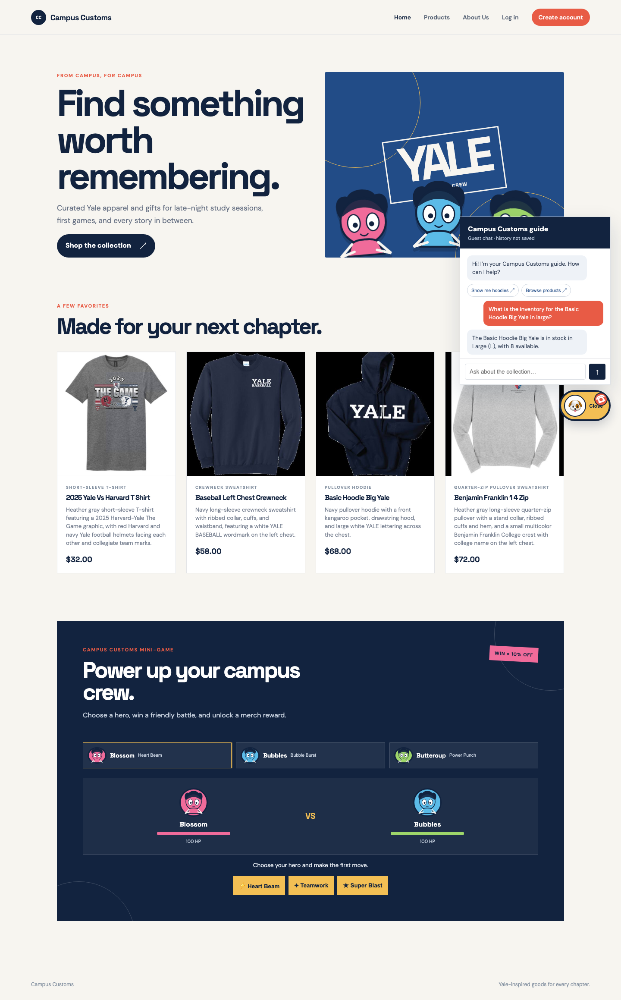
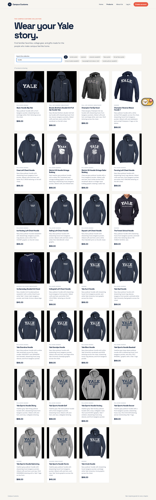

Screenshots captured from the running Vite site at http://127.0.0.1:5173 with the FastAPI service at port 8000. Each check exercises a required homework behavior end to end.
1. Chat inventory lookup
Pass — the assistant returned a database-backed quantity for a specific size.

The visitor asks, “What is the inventory for the Basic Hoodie Big Yale in large?” and the chat replies that size Large (L) has 8 available. This proves the chat route and inventory tool are connected to the live catalogue data.
2. Dynamic category search cards
Pass — a category question produces structured, clickable product cards in the chat.
After “show me hoodies,” the assistant displays eight matching products with images, names, descriptions, prices, and follow-up suggestions. Each card is rendered by the frontend and links to the product detail route.
3. Problem 9 usability feature: catalogue search and feedback
Pass — the catalogue search filter updates results immediately and reports the number of matches.

The Products page is filtered with the search term “hoodie”; the page visibly reports “27 products showing” and displays only matching catalogue cards. This demonstrates the Problem 9 frontend search usability improvement.